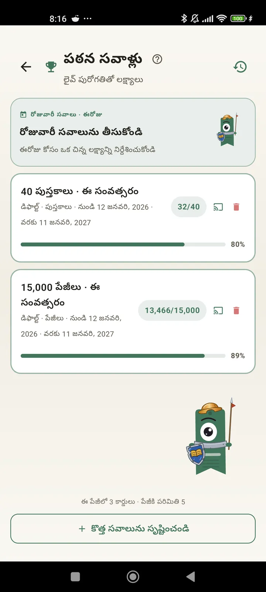

పాఠకుడిగా మిమ్మల్ని మీరు తెలుసుకోండి
మీ చదువును పూర్తిగా ఆస్వాదించడానికి సవాళ్లు, Bingo, విడ్జెట్లు ఇంకా మరెన్నో ఫీచర్లు. 3.7 లో కొత్తవి: సవాళ్లు మరియు Bingo విడ్జెట్లు.

పఠన సవాళ్లు
పేజీలు, స్ట్రీక్లు లేదా శైలుల ఆధారంగా లక్ష్యాలు పెట్టుకోండి. ఉచితంగా 15 వరకు సక్రియ సవాళ్లు, Pro తో అపరిమితం. అదనంగా, పరిమితిలో లెక్కకు రాని, మార్చుకోగలిగే రోజువారీ సవాలు.

రోజువారీ సవాలు
ప్రతి రోజూ కొత్త లక్ష్యం. మీ స్ట్రీక్ కొనసాగాలంటే అర్ధరాత్రిలోగా సవాలును పూర్తి చేయండి.

చదువు Bingo
ప్రతి నెలా థీమ్ గడులతో రెండు కొత్త Bingoలు. వరుసలు, నిలువు వరుసలు లేదా మొత్తం కార్డు పూర్తి చేయండి.

వారపు సారాంశం
ప్రతి సోమవారం మీ వారం ఒక్క చూపులో: చదివిన పేజీలు, మొత్తం సమయం, స్ట్రీక్, గత వారంతో పోలిక.

నెలవారీ సారాంశం
నెల ముగిసినప్పుడు Lecturameter సారాంశం చెబుతుంది: పేజీలు, సమయం, పూర్తి చేసిన పుస్తకాలు, రోజు వారీ వేగం, ఈ నెల పుస్తకం.

Bingo విడ్జెట్ Pro
ఈ నెల Bingo కార్డు ఎప్పుడూ కనిపిస్తూ, మీరు పూర్తి చేసిన గడులు, చేసిన వరుసలతో.

పుస్తకం విడ్జెట్ ఉచితం
మీరు చదువుతున్న పుస్తకాన్ని హోమ్ స్క్రీన్లోనే చూడండి: ముఖచిత్రం, శీర్షిక, రచయిత, పేజీలు, పురోగతి శాతం, ఎప్పుడూ తాజాగా. మీకు నచ్చిన చోట సరిపోయేలా పరిమాణం మార్చవచ్చు.
నిజంగా బ్రో, ఈ యాప్ థెరపీ లాంటిది. రోజుకు రెండు పేజీలు చదివే నేను ఇప్పుడు రోజుకు సుమారు 20 పేజీలు చదువుతున్నాను, ఇంకా మెరుగవుతున్నానువినియోగదారు అభిప్రాయం, ఇమెయిల్ ద్వారా వచ్చింది

నెలవారీ పోలిక Pro
యాప్ తెరవకుండానే ఇటీవలి నెలలను ఒక్క చూపులో చూడండి. ప్రతి నెల పేజీలకు బార్లు, ప్రస్తుత నెల హైలైట్ చేయబడి, గత నెల కంటే ఈ నెల బాగుందో లేదో ఒక్క చూపులో తెలుస్తుంది.

సవాళ్ల విడ్జెట్ Pro
మీ సక్రియ సవాళ్లు, వాటి పురోగతి హోమ్ స్క్రీన్పై. ఏవి చూపాలో సవాళ్ల స్క్రీన్ నుండి ఎంచుకోండి.